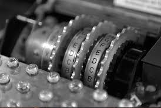
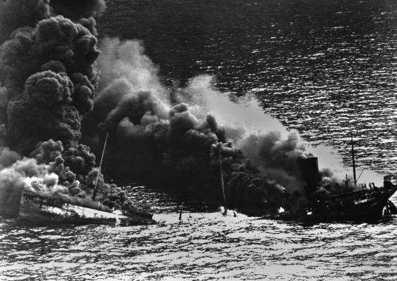
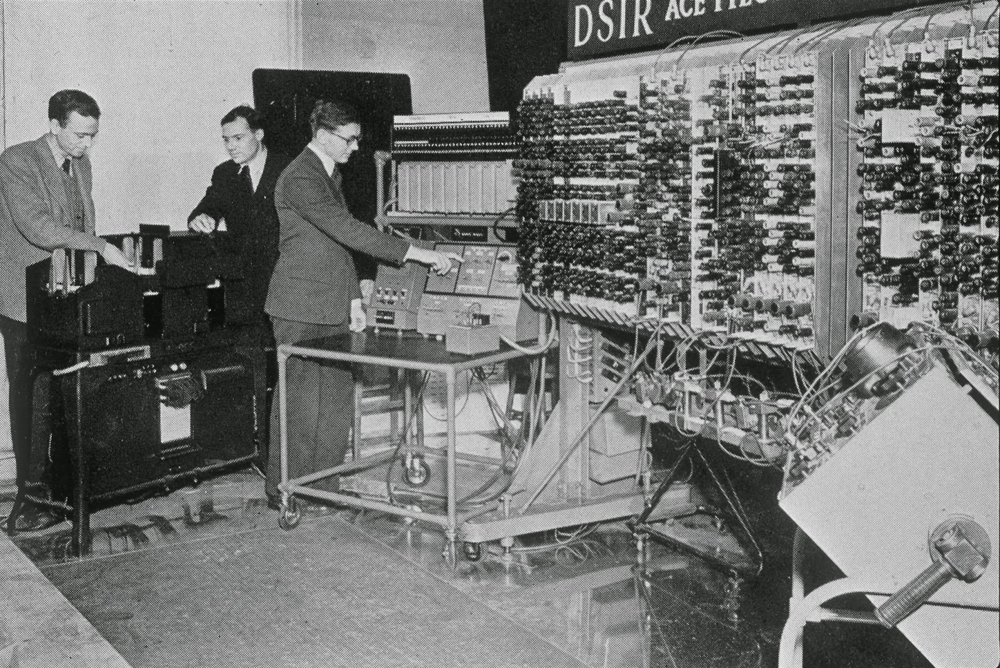
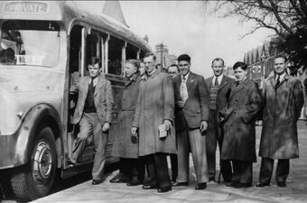
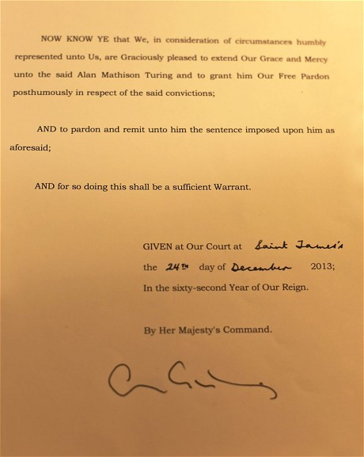
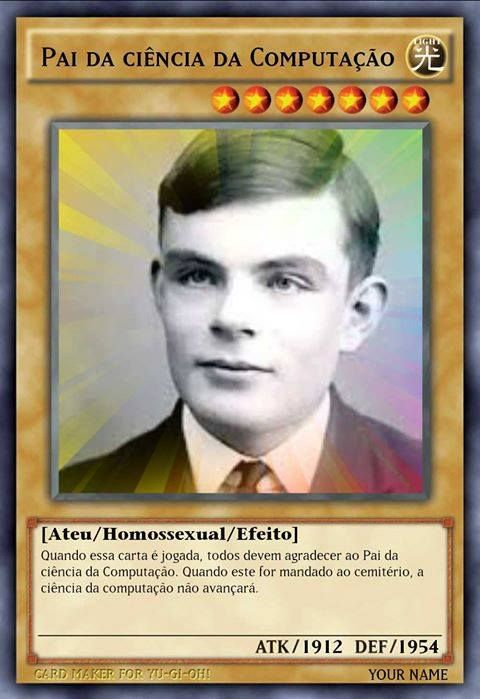

Alan Turing

Alan Turing foi um matemático e criptógrafo inglês considerado atualmente como o pai da computação, uma vez que, por meio de suas ideias, foi possível desenvolver o que chamamos hoje de computador. Turing também ficou muito conhecido como um dos responsáveis por decifrar o código utilizado pelas comunicações nazistas durante a Segunda Guerra Mundial.
Por meio do seu trabalho, foi desenvolvida uma máquina conhecida como “bomba eletromecânica” (The Bombe, em inglês), que decifrou o código da máquina Enigma utilizado pelos alemães, e permitiu que os Aliados tivessem acesso a informações privilegiadas ao longo da guerra. Turing morreu em 1954, provavelmente tendo cometido suicídio.
Vida pessoal
Alan Mathison Turing nasceu no dia 23 de junho de 1912, em um bairro residencial de Londres, capital da Inglaterra. Seu pai, Julius Mathison Turing, era um oficial que trabalhava na Madras Presidency, uma região administrativa criada pelos britânicos na Índia britânica (na época, a Índia era um território dependente da Inglaterra). Sua mãe, Ethel Sara Stoney, era filha de um engenheiro-chefe que também trabalhava nessa região.
Área em que Alan Mathison Turing nasceu
Durante sua infância, Turing estudou em diversas escolas, tais como Hazelhurst Preparatory School e Sherborne School. Na Sherborne ingressou quando tinha 13 anos, e um episódio peculiar marcou sua entrada nela. No seu primeiro dia de aula, aconteceu uma greve geral na Grã-Bretanha que o impediu ir de trem. Turing resolveu, em sua bicicleta, percorrer os 100 km que separavam a escola de sua casa.
Alguns estudos feitos sobre a vida de Turing mostram que, em Sherborne, ele logo demonstrou grande interesse pela matemática, e, apesar de ser reconhecido atualmente como um gênio, algumas de suas notas eram apenas regulares. Em Sherborne, conheceu Christopher Morcom, o qual muitos acreditam ter sido seu primeiro amor.
Morcom, porém, faleceu em 1930, em decorrência de tuberculose bovina. A essa altura, Turing tinha 18 anos de idade. Anos depois, ele ingressou no curso de Matemática pela Universidade de Cambridge, e graduou-se em 1934, com honras. Depois disso, dedicou-se integralmente à matemática e à criptografia.
Vida profissional
Em 1936, Turing apresentou uma teoria a respeito da construção de uma máquina capaz de realizar cálculos. Entre 1936 e 1938, estudou matemática e criptografia em Princeton, local em que obteve seu PhD. A partir de 1938, retornou à Inglaterra e passou a integrar uma organização do governo britânico, responsável por quebrar códigos e enigmas, chamada Government Code and Cypher School.
Com o começo da Segunda Guerra Mundial, em setembro de 1939, Turing ingressou no Bletchley Park, a instalação que reuniu grandes matemáticos e criptógrafos e que teve papel crucial na interceptação de mensagens enviadas pelos exércitos do Eixo (formado por Itália, Alemanha e Japão). Nessa instalação, houve uma intensa cooperação de cientistas ingleses, franceses e poloneses para decifrar o código utilizado pelos alemães e seus aliados.
Os alemães utilizavam a Enigma, uma máquina alemã que criptografava as mensagens que eram enviadas pelo exército e tornava-as quase indecifráveis. Alan Turing e outros matemáticos ingleses atuaram diretamente na quebra do código alemão, e, para isso, contaram com estudos realizados por três matemáticos poloneses, que atuaram entre 1932 e 1939.
Os franceses concederam aos britânicos chaves criptográficas utilizadas pelo Wehrmacht (exército alemão), e os poloneses deram-lhes máquinas Enigma. Em 1940, os britânicos conseguiram decodificar as primeiras mensagens enviadas pelos alemães, mas somente com a Bombe foi possível decodificá-las na velocidade demandada pela guerra.
A máquina utilizada pelos britânicos na decodificação das mensagens foi resultado do trabalho de Turing. Sua teoria inspirou-se nos estudos do polonês Marian Rejewski, e a execução do trabalho foi realizada pelo engenheiro Harold Keen. A importância de Turing dá-se porque foi ele que, ainda em 1939, afirmou que era possível construir um novo artefato capaz de quebrar o código alemão. Isso porque os poloneses já tinham desenvolvido uma bomba eletromecânica, mas como o princípio de criptoanálise da bomba polonesa era frágil, essa máquina logo se tornou obsoleta.
Alan Turing também foi o responsável por recrutar Tommy Flowers para o departamento de criptografia de Bletchley Park. Flowers, anos depois, acabou sendo o responsável pela construção do Colossus, uma importante máquina que decifrou o código de uma máquina de criptografia alemã chamada Lorenz.
Importância na Segunda Guerra Mundial
A primeira bomba eletromecânica desenvolvida por meio dos estudos de Alan Turing ficou pronta em março de 1940 e foi nomeada Victory. As máquinas construídas com base nesse modelo desenvolvido por Alan Turing foram essenciais para os Aliados na Segunda Guerra Mundial, porque lhes deram uma vantagem estratégica extremamente importante: informação.
As mensagens decifradas pelas Bombe de Turing faziam parte do Ultra — departamento de inteligência britânico responsável por interceptar e decifrar as mensagens enviadas pelos sistemas de comunicação do Eixo. O Ultra teve atuação destacada na receptação de mensagens alemãs e contribuiu também para decifrar códigos japoneses.
Esse foi um departamento gigantesco, chegando a contar com seis mil trabalhadores, dos quais Alan Turing foi um dos nomes mais proeminentes. Por conta de sua importância, esse departamento era conhecido apenas pelo mais alto escalão do governo e do exército britânico. O líder soviético Josef Stalin, por exemplo, nunca soube como os britânicos conseguiam obter informações dos alemães.
O historiador Max Hastings argumentou que o Ultra (do qual as bombas eletromecânicas faziam parte) foi responsável por poupar a destruição de cerca de dois milhões de toneladas de embarcações britânicas, só no segundo semestre de 1941.|1| Por meio das informações decodificadas pela máquina projetada por Turing, os britânicos conseguiram mapear a posição de embarcações alemãs, e, com isso, era possível desviar a rota das embarcações inglesas com antecipação.
Isso foi extremamente importante, porque, entre 1940 e 1941, o Reino Unido esteve lutando sozinho na guerra, uma vez que os franceses tinham sido rapidamente derrotados. A ilha britânica, isolada, acabou sendo cercada por submarinos alemães chamados de U-boats, que afundavam embarcações que levavam suprimento para o Reino Unido. Com a Bombe, foi possível contornar esse problema.
Em 1943, as máquinas desenvolvidas por Turing demonstravam a sua importância para a inteligência britânica, pois eram responsáveis por decifrar, a cada mês, cerca de 84 mil mensagens enviadas pelos alemães via Enigma
O sistema de decodificação desenvolvido por Turing e sua equipe e o trabalho desenvolvido por meio do Ultra também contribuíram em batalhas realizadas no norte da África, na Grécia, na Normandia etc. Além de ajudar na vitória, Turing e sua invenção contribuiram para encurtar o tempo da Segunda Guerra e foram responsáveis por salvar a vida de milhões de pessoas.
Últimos anos de Turing
Depois da guerra, Turing prosseguiu seu trabalho no desenvolvimento de um computador e de uma inteligência artificial e trabalhou em locais como o National Physical Laboratory, vinculado ao governo britânico, e a Universidade de Manchester.
Em janeiro de 1952, teve sua casa assaltada pelo rapaz com quem vivia um relacionamento, e, ao admitir para a polícia seu envolvimento com o assaltante, foi indiciado por “indecência grave”. Naquela época, a homossexualidade era proibida na Inglaterra, e isso levou Turing a julgamento.
Condenado por indecência grave, o matemático foi forçado a afastar-se de seu ofício. Para evitar ser preso, Turing aceitou passar por um “tratamento” à base de estrogênio (hormônio feminino) que, na verdade, consistia em uma castração química. Em 8 de junho de 1954, aos 41 anos de idade, Alan Turing foi encontrado morto em sua casa.
A causa da morte foi envenenamento por cianeto, possivelmente por ingerir uma maçã envenenada com esse composto. Assim, registrou-se sua morte como resultado de um suicídio, embora familiares do matemático tenham argumentado, anos depois, que ela aconteceu por engano. Os restos mortais de Turing foram cremados, e até hoje não se sabe se sua morte foi acidental ou proposital.
Em 2009, o primeiro-ministro britânico Gordon Brown desculpou-se publicamente pelo modo como o governo britânico procedeu com Alan Turing após a guerra. Em 2013, a rainha Elizabeth II concedeu o perdão real ao cientista, livrando-o postumamente de sua condenação prévia por sua homossexualidade.
Legado de Alan Turing
O maior legado deixado pelo matemático Alan Turing é, sem dúvidas, a invenção da máquina de Turing. Esta é um modelo teórico que pode ser usado para implementar todos os aspectos lógicos e matemáticos de um computador, independentemente de como ele venha a ser construído (mecânica ou eletronicamente, por exemplo).
A máquina de Turing foi criada em 1936, muito tempo antes da invenção dos computadores modernos. A maior parte dos nossos dispositivos eletrônicos, como celulares e computadores, são máquinas programáveis, que operam de acordo com os fundamentos da máquina de Turing. As calculadoras, por exemplo, operam como as primeiras máquinas de Turing, programadas para realizar cálculos simples.
Como citado, a participação de Turing na decifração da Enigma e na construção da bomba eletromecânica contribuiu para acelerar o final da Segunda Guerra Mundial, sendo responsável por salvar milhões de vidas. Além disso, nesse período, as tecnologias de criptografia e computação sofreram grandes avanços.
Além de ter construído as bases da computação moderna, Turing também desenvolveu os primeiros testes capazes de distinguir a inteligência artificial da inteligência humana. Atualmente os testes de Turing são usados em diversos sites e dispositivos, promovendo maior segurança para os seus usuários.
referência
SILVA, Daniel Neves. "Alan Turing"; Brasil Escola. Disponível em:brasilescola.uol.com. Acesso em 14 de maio de 2020.